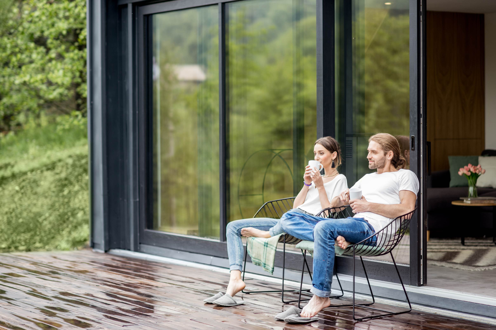
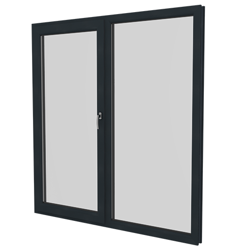
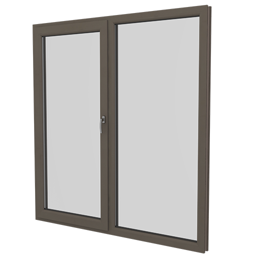
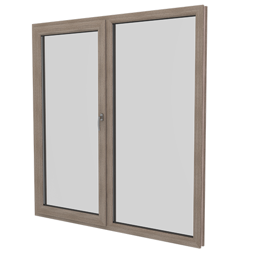
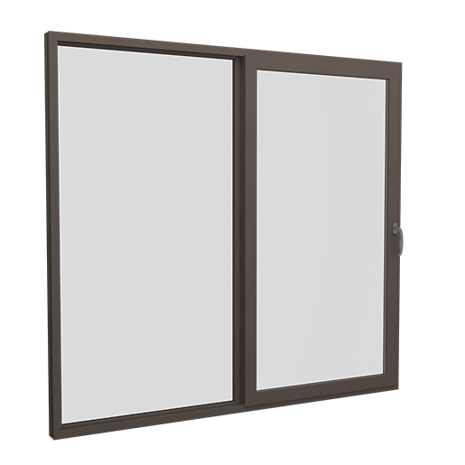
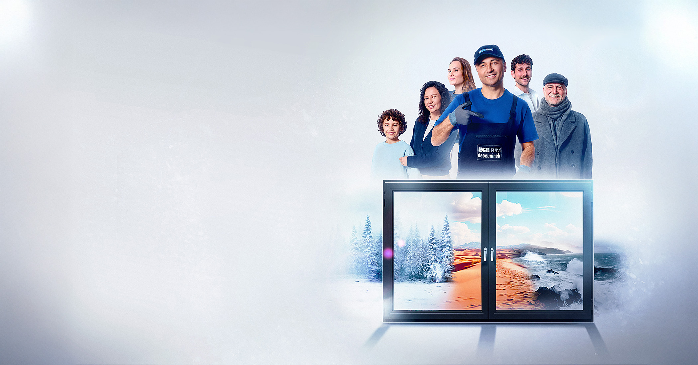

Evinize açılan yeni pencere.
Karşıyaka'dan tüm İzmir'e; PVC pencere, kapı, sürme, panjur ve cam balkonda ölçüden montaja anahtar teslim çözümler.


Konforu, yalıtımı ve estetiği evinize taşıyoruz.
Mert Pen olarak İzmir Karşıyaka'daki atölyemizde Egepen Deceuninck profilleriyle ölçüye özel PVC doğrama üretiyor, keşiften montaja kadar tüm süreci kendi ekibimizle yönetiyoruz.
- Ücretsiz keşif ve net fiyatYerinde ölçü alır, ihtiyacınıza uygun sistemi birlikte seçeriz.
- Dünya markası profilEgepen Deceuninck'in yüksek yalıtımlı sistemleri.
- Temiz ve hızlı montajSöküm, montaj ve satış sonrası destek tek elden.
Her ihtiyaca uygun sistem
Pencere ve kapıdan sürme sistemlere, panjurdan cam balkona kadar geniş ürün yelpazesi.
Yalıtımda fark yaratan değerler



Cephenize karakter katan renkler
Beyazın ötesine geçin. Ahşap dokulu laminelerden metalik tonlara kadar onlarca seçenekle pencereleriniz evinizin stiline uyum sağlar.
Neden PVC pencere?
Doğru profil ve doğru montaj, yıllarca sürecek konfor ve tasarruf demek.
Isı Yalıtımı
Çok odacıklı profiller ve ısıcam ile kışın sıcak, yazın serin bir ev; daha düşük enerji faturası.
Ses Yalıtımı
Orta contalı sistemler şehir gürültüsünü dışarıda bırakır, huzuru içeri alır.
Güvenlik
Çelik takviyeli profiller ve kaliteli aksesuarlarla sağlam ve uzun ömürlü kullanım.
Çevre Dostu
%100 geri dönüştürülebilir PVC; boya ve bakım gerektirmeyen, doğaya saygılı malzeme.
Egepen Deceuninck kalitesi, Mert Pen işçiliği.
Belçika merkezli Deceuninck grubunun Türkiye'deki markası Egepen Deceuninck; güvenilirlik, inovasyon ve sürdürülebilirlik ilkeleriyle üretir. Biz de bu profilleri ustalıkla işleyerek evinize taşırız.

Ücretsiz keşif için hemen arayın.
Uzman ekibimiz adresinize gelsin, ölçü alsın ve size en uygun çözümü sunsun.
@mertpen35
Son uygulamalarımızı Instagram'da takip edin.